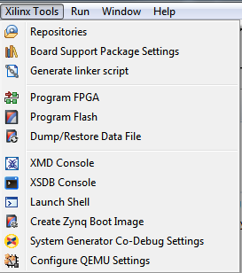

The Xilinx Tools menu contains the following items.
Name |
Function |
|---|---|
Repositories |
Add, change, or remove software repositories. |
Board Support Package Settings |
Customize the Board Support Package created for application development within SDK, including libraries and drivers, or for external tools. |
Generate Linker Script |
Configure and generate the linker script. |
Program FPGA |
Program the FPGA. (Keyboard shortcut: Ctrl+Shift+D) |
Program Flash |
Program a Flash memory on the target board. |
Dump/Restore Data File |
Copy the memory file contents to a data file and restore data file contents back to memory. |
XMD Console |
Open the XMD Console. |
XSDB Console |
Open the XSDB Console |
Launch Shell |
Launch the Command shell. |
Create Zynq Boot Image |
Use to create a Zynq bootable image. |
System Generator Co-Debug Settings |
Specify settings for use in co-debug sessions with the System Generator tool. |